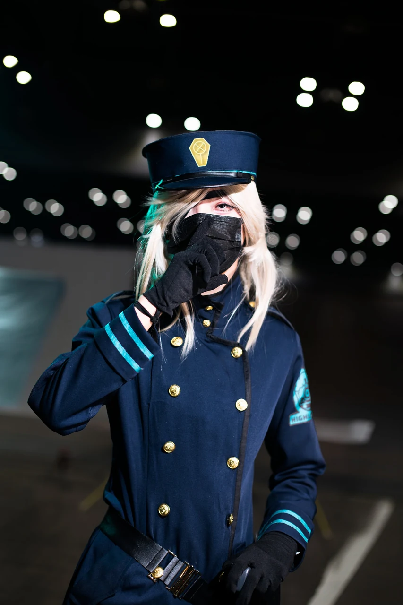
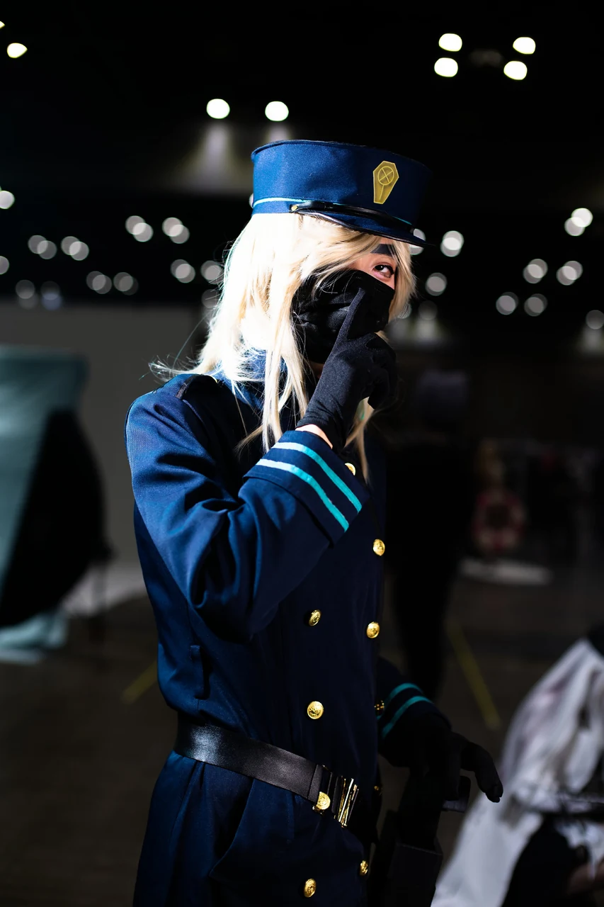
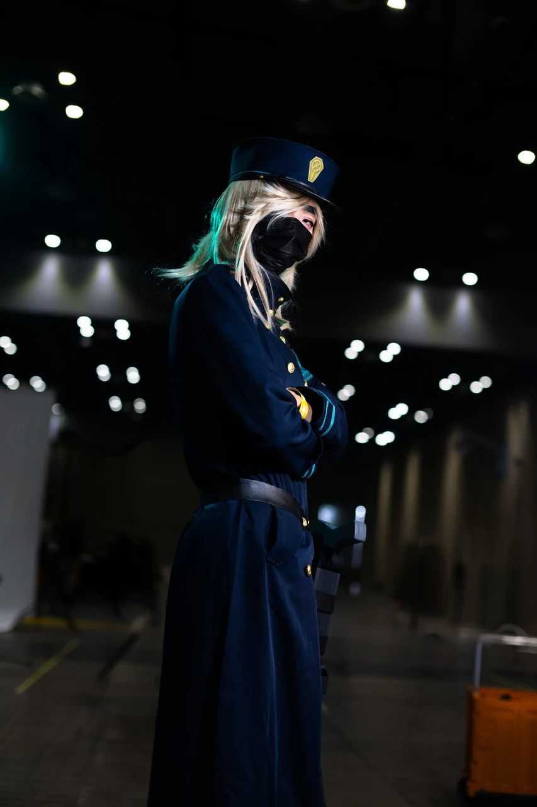
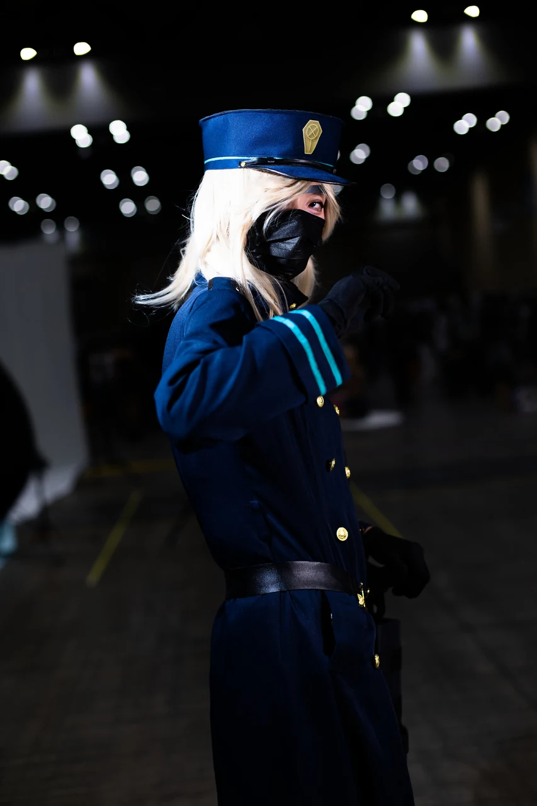

게시 2026-09-16
블루아카이브 스오우 코스프레 사진 나왔네영 히힛9서코 즐거웠습니당!!!#코스어𝕏친소 #코스어 #코스프레 @Patapon_Photo
모델 정보 미등록
블루아카이브 스오우 코스프레 사진 나왔네영 히힛9서코 즐거웠습니당!!!#코스어𝕏친소 #코스어 #코스프레 @Patapon_Photo
원 게시자: 귀여운 곰둥이 (@aiseuke86916177)
#12 


